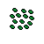

目次
アイテム編
1コイン
このアイテムを取るとコインが1貰える。回収するとスコアに1ポイントが加算される
5コイン
このアイテムを取るとコインが1貰える。回収するとスコアに5ポイントが加算される
10コイン
このアイテムを取るとコインが10貰える。回収するとスコアに10ポイントが加算される
50コイン
このアイテムを取るとコインが50貰える。回収するとスコアに50ポイントが加算される
なす（隠しアイテム）
コインと同じで当たり判定はないが取る事はできる物。取るのは必須ではない。隠し要素っていうか隠しアイテム。（1コースに1個まで隠すことができる）これを取るとステージ選択画面に取った個数が表示される。各コースから一定数なすを集めると集めたなすと交換に隠しステージが解放される。
手裏剣
このアイテムを取りSPACEキーを押すと手裏剣を前方方向に1つ飛ばすことができる。連射はできない。取るとスコアに30ポイントが加算される
パワーおにぎり
このアイテムを取ると10秒間ジャンプの高さと足の速さが通常の1.3倍になる。
敵モブ編
カタツムリ

前に進み続けるがあまり速くない。1回踏めば倒せる。倒すとスコアに5ポイントが加算される
チビトカゲ君
主人公の方向に走る（まあまあ早い）（主人公を追尾して付いてくる）1回踏めば倒せる。倒すとスコアに15ポイントが加算される
ハエ
上下に飛んでいる。常に主人公がいる方向を向いている。一回踏めば倒せる。倒すとスコアに20ポイントが加算される。
氷オバケ
雪のステージに現れる。ゆっくり滑りながら前に進む。踏むだけでは倒せず「手裏剣」または「懐中電灯」を使ってのみ倒すことができる。倒すとスコアに25ポイントが加算される
草ブロックオバケ
草ブロックに擬態していることがある。主人公がジャンプをするとそれに少し遅れてこのキャラもジャンプをする。このキャラは設置されている場所から動かない。1回踏めば倒せる。倒すとスコアに10ポイントが加算される
鯉のぼり
空を飛んでいる。飛びながら主人公を追尾する。まあまあ高頻度で火を主人公に向かって飛ばす。倒すとスコアに30ポイントが加算される。火に当たるとダメージを受ける。2回踏めば倒せる。手裏剣を使えば1回で倒せる。
ボス編
赤カエル
巨大化して赤くなってしまったカエル。本作の黒まｋ…おっと誰かが来たようだ…
食材編
美味しい海藻
海エリアのボスを倒すと貰える食材。
珍しいジャガイモ
草原エリアのボスを倒すと貰える食材。
最高級のカレールー
街エリアのボスを倒すともらえる食材。
雪国の米

雪エリアのボスを倒すともらえる食材。
天下一品の豆
山エリアのボスを倒すともらえる食材。
伝説の唐辛子
火山エリアのボスを倒すともらえる食材。
甘いトウモロコシ
ステージでコインを集め、ショップでこの食材を買う。値段は150コイン。
格別のニンジン
ステージでコインを集め、ショップでこの食材を買う。値段は200コイン。
極上の肉
ステージでコインを集め、ショップでこの食材を買う。値段は250コイン。
調理器具
ラスボスを倒すことでゲットできる。